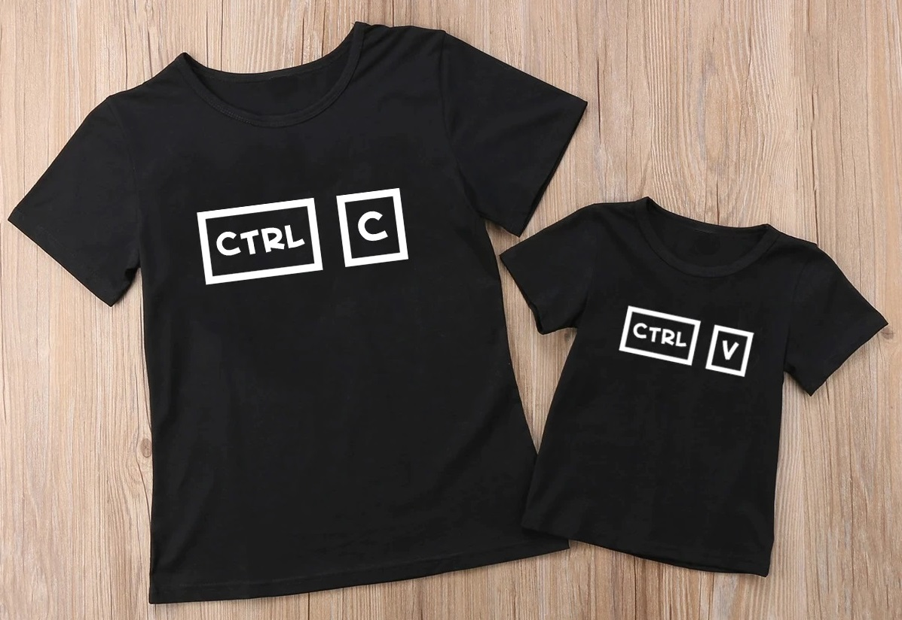

MS 엣지
MS 엣지
"우클릭 해제" 가 아닌 "우클릭 차단 방지"
타 앱과 같이 이미 존재하는 우클릭 차단 메커니즘을 해제하는 것이 아니라, 원천적으로 웹사이트의 우클릭 차단을 불가능하게 합니다. 타 앱에서 해제하지 못하던 사이트에서도 우클릭이 정상적으로 동작하도록 합니다.
그냥 켜 두시면 됩니다.
보다 정교하고 복잡한 기술을 적용하여, 웹사이트의 동작에 미치는 영향을 최소화하였습니다. "우클릭 차단 종결자" 의 자바스크립트 기반 우클릭 차단 방지는 모든 사이트에서 기본값으로 켜져 있습니다.
그래도 드래그가 안될 땐, 추가 기능을 켜세요!
우클릭 차단과 달리, 드래그를 통한 블록 지정은 자바스크립트가 비활성화 된 경우에도 CSS를 이용하여 차단 가능합니다. 확장 프로그램 아이콘을 클릭하여 "블록 지정 활성화(CSS)" 기능을 켜면, 이 경우에도 예외 없이 모든 텍스트를 블록 지정할 수 있습니다.
사이트 별 설정 기능
특정 사이트에서 확장앱을 끄고 싶으신가요? 확장앱 아이콘에서 도메인 별 활성화 여부를 선택할 수 있습니다. 이는 크롬 동기화 기능을 통해 모든 컴퓨터로 동기화됩니다.
이 사이트의 우클릭 방지를 해제할 수 있나요?
이미 눈치채셨을지 모르겠지만, 이 사이트에도 우클릭, 드래그 차단이 적용되어 있습니다. 당신이 사용하고 있는 확장앱은 이 사이트의 차단을 무력화할 수 있는지 테스트해보세요!
이 블록의 글은 자바스크립트를 비활성화 하더라도 선택할 수 없습니다. 당신이 사용하고 있는 확장앱으로는 이 문장을 드래그하여 선택할 수 있나요?
만약 확장앱을 실행하셨다면, 실행한 뒤에도 사이트의 기능이 정상적으로 작동하는지 확인해보세요.
아래 버튼을 누르시면 페이지가 새로고침 되나요?

1.2.0: 복사 차단 방지
복사 금지에 대한 처리는 필요한 사이트가 별로 없어 개발 대상으로 고려하지 않았습니다. 그런데 개발 후 의외로 일부 사이트에서 우클릭 메뉴 > 복사, 컨트롤 + C를 통해 텍스트를 복사하려 해도 실제로는 복사되지 않거나, 알림창이 뜨거나, 복사된 내용에 변형이 가해지는 것을 발견했습니다. 특히 자연스럽고 습관적인 사용자 행위에 대해 알림창을 띄우는 것은 경험을 매우 저해하는 요소임이 분명했습니다.
복사를 방해하는 행위를 막기 위해 기존 우클릭 차단 방지와 비슷한 접근방식을 적용할 수 있어, 이를 구현하여 1.2.0 버전을 릴리즈 하였습니다. 현재 "우클릭 차단 방지" 기능이 켜져 있을 시 복사 차단 방지도 함께 켜지며, 끄기 위해선 우클릭 차단 방지를 꺼 주시면 됩니다.
파이어폭스 버전 게시
처음 이 확장앱을 소개하였을 때, 몇몇 분들께서 파이어폭스 버전을 요청하셨습니다.
파이어폭스 버전 개발이 늦춰진 이유는 두 가지입니다.
보다 까다로운 리뷰 Mozilla의 확장앱 스토어에 등록되기 위해서는 타 브라우저에 비해 엄격한 리뷰 과정을 거쳐야 합니다. 그 중 하나가 원본 소스코드의 제출인데, 사람이 직접 쓴 것이 아니라, 기계에 의해 쓰여져 사람이 읽기 어려운 코드의 경우 원본 소스코드 제출을 의무화 하고 있습니다. "우클릭 차단 종결자" 의 코드는 이에 해당되지만, 모든 소스코드와 빌드 툴을 제출하기에는 어려움이 있었습니다.
파이어폭스만의 API를 이용하면 확장앱을 더욱 효율적으로 구현 가능 파이어폭스를 빠르게 지원하려면, 이미 기존 웨일 버전이 파이어폭스에서도 제공하는 API만을 이용하여 구현되었기 때문에 그 확장앱 파일을 그대로 사용해도 됩니다. 하지만 크롬 기반 브라우저에는 존재하지 않는 파이어폭스만의 API를 이용하면 확장앱의 기능을 보다 효율적으로 구현할 수 있음을 알고 있었고, 파이어폭스 버전을 개발한다면 이를 꼭 이용하고자 하였습니다.
파이어폭스 버전 게시 - 이어서...
이러한 이유로 인해, 파이어폭스 버전은 현재 보고 계신 이 홈페이지를 통해 배포하기로 하였습니다.
공홈 배포와의 차이 공홈에서 본 확장앱을 검색해도 나오지 않습니다. 확장앱의 자동 업데이트 주소가 본 홈페이지로 설정됩니다. 확장앱의 자체 배포를 위해서는 Mozilla의 보다 간소한 리뷰 과정을 거치게 됩니다. 보안성 체크는 원본 소스 없이도 누구나 확장앱 파일의 압축을 풀어 확인하실 수 있을 것입니다.
파이어폭스에 확장앱 설치하기CSS 모듈 업데이트
1.1.0 버전에는 CSS 모듈의 2가지 업데이트가 포함되어 있습니다.
현재 존재하는 그 어떤 우클릭, 드래그 관련 확장앱에서도 찾아볼 수 없었던, CSS pointer-events 속성에 대한 대응이 이루어졌습니다. 이 트릭을 실제로 사용하는 사이트로 두 대형 웹툰 플랫폼이 있습니다.
CSS 모듈을 실행하면 일부 글자의 위치가 살짝 어긋나게 표현되던 문제를 해결하였습니다. 문제의 원인이 되었던 크롬 브라우저의 새로운 버그를 발견하여 공식적으로 리포팅 하였습니다.
첫 버전이 개발되었습니다.
다른 우클릭 해제 확장앱이 가지고 있던 문제점을 해결하고, 무엇보다 "그냥 켜 놓아도 되는" 확장앱을 만들고자 하는 목표로 개발을 시작하여, 첫 버전이 완성되었습니다.
핵심 기능은 대부분 구현되었고, 추후 다음과 같은 부분을 개선하려 합니다.
- 사이트별 설정을 확인할 수 있는 설정 페이지 추가
- 팝업 UI의 사용성 개선